<!DOCTYPE html>
<html lang="ja"><!DOCTYPE html>
  <html lang="ja">
    <head>
      <meta charset="utf-8">
      <meta name="language" content="ja">
      <meta http-equiv="X-UA-Compatible" content="IE=edge">
      <meta name="viewport" content="width=device-width,initial-scale=1">
      <meta http-equiv="Content-Type" content="application/xhtml+xml; charset=utf-8">
      <meta name="viewport" content="width=device-width, initial-scale=1, user-scalable=no">
      <meta name="format-detection" content="telephone=no">
      <script>
        (function(d) {
        var config = {
        kitId: 'ipq1fii',
        scriptTimeout: 3000,
        async: true
        },
        h=d.documentElement,t=setTimeout(function(){h.className=h.className.replace(/\bwf-loading\b/g,"")+" wf-inactive";},config.scriptTimeout),tk=d.createElement("script"),f=false,s=d.getElementsByTagName("script")[0],a;h.className+=" wf-loading";tk.src='https://use.typekit.net/'+config.kitId+'.js';tk.async=true;tk.onload=tk.onreadystatechange=function(){a=this.readyState;if(f||a&&a!="complete"&&a!="loaded")return;f=true;clearTimeout(t);try{Typekit.load(config)}catch(e){}};s.parentNode.insertBefore(tk,s)
        })(document);
        
        
      </script>
      <link rel="stylesheet" type="text/css" href="../assets/css/app.min.css">
      <link rel="stylesheet" href="../assets/css/vendor/swiper.min.css">
      <script type="text/javascript" src="../assets/js/jquery.min.js"></script>
      <script>
        $(function(){
        	$('html,body').animate({ scrollTop: 0 }, '1');
        	//- $('#Header').addClass('KV');
        	
        	function Loading01(){
        		$('body').removeClass('LoadingNow');
        	}
        	function Loading02(){
        		$('nav#sideMenu .Contents .LeftBlock, nav#sideMenu .Contents .RightBlock, nav#sideMenu .Contents .BottomBlock').css('transform', 'translate(0, 0)');
        		//- $('#Header').removeClass('KV');
        	}
        
        	Loading01();
        	setTimeout(function(){
        		Loading02();
        	},800);
        	
        });
        
        
        
      </script><!-- favicon -->
      <link rel="apple-touch-icon" href="../assets/img/favicon/favicon.png">
      <link rel="icon" href="../assets/img/favicon/favicon.ico">
      <link rel="apple-touch-icon" sizes="57x57" href="../assets/img/favicon/apple-icon-57x57.png">
      <link rel="apple-touch-icon" sizes="60x60" href="../assets/img/favicon/apple-icon-60x60.png">
      <link rel="apple-touch-icon" sizes="72x72" href="../assets/img/favicon/apple-icon-72x72.png">
      <link rel="apple-touch-icon" sizes="76x76" href="../assets/img/favicon/apple-icon-76x76.png">
      <link rel="apple-touch-icon" sizes="114x114" href="../assets/img/favicon/apple-icon-114x114.png">
      <link rel="apple-touch-icon" sizes="120x120" href="../assets/img/favicon/apple-icon-120x120.png">
      <link rel="apple-touch-icon" sizes="144x144" href="../assets/img/favicon/apple-icon-144x144.png">
      <link rel="apple-touch-icon" sizes="152x152" href="../assets/img/favicon/apple-icon-152x152.png">
      <link rel="apple-touch-icon" sizes="180x180" href="../assets/img/favicon/apple-icon-180x180.png">
      <link rel="icon" type="image/png" sizes="192x192" href="../assets/img/favicon/android-icon-192x192.png">
      <link rel="icon" type="image/png" sizes="32x32" href="../assets/img/favicon/favicon-32x32.png">
      <link rel="icon" type="image/png" sizes="96x96" href="../assets/img/favicon/favicon-96x96.png">
      <link rel="icon" type="image/png" sizes="16x16" href="../assets/img/favicon/favicon-16x16.png">
      <link rel="manifest" href="../assets/img/favicon/manifest.json">
      <meta name="msapplication-TileColor" content="#ffffff">
      <meta name="msapplication-TileImage" content="../assets/img/favicon/ms-icon-144x144.png">
      <meta name="theme-color" content="#ffffff"><!-- Google tag (gtag.js) -->
      <script async src="https://www.googletagmanager.com/gtag/js?id=G-ER9BEJ74MY"></script>
      <script>
        window.dataLayer = window.dataLayer || [];
        function gtag(){dataLayer.push(arguments);}
        gtag('js', new Date());
        
        gtag('config', 'G-ER9BEJ74MY');
      </script>
      <title>BREWERY | HIROSHIMA NEIGHBORLY BREWING</title>
      <meta name="description" content="広島の象徴である平和公園の東側、元安橋から本通りに入ってすぐのところに、2020年8月に、マイクロブルワリー（クラフトビールの醸造所）を自社のオリジナルビールと炭火焼きが楽しめるパブ＆炭火居酒屋をOPEN！"><!-- OGP -->
      <meta property="og:title" content="BREWERY | HIROSHIMA NEIGHBORLY BREWING">
      <meta property="og:type" content="website">
      <meta property="og:url" content="https://hnb.beer/brewery/">
      <meta property="og:image" content="https://hnb.beer/assets/img/ogp.jpg">
      <meta property="og:site_name" content="HIROSHIMA NEIGHBORLY BREWING">
      <meta property="og:description" content="広島の象徴である平和公園の東側、元安橋から本通りに入ってすぐのところに、2020年8月に、マイクロブルワリー（クラフトビールの醸造所）を自社のオリジナルビールと炭火焼きが楽しめるパブ＆炭火居酒屋をOPEN！">
      <meta name="twitter:card" content="summary_large_image">
      <meta property="twitter:title" content="BREWERY | HIROSHIMA NEIGHBORLY BREWING">
      <meta name="twitter:description" content="広島の象徴である平和公園の東側、元安橋から本通りに入ってすぐのところに、2020年8月に、マイクロブルワリー（クラフトビールの醸造所）を自社のオリジナルビールと炭火焼きが楽しめるパブ＆炭火居酒屋をOPEN！">
      <meta name="twitter:image" content="https://hnb.beer/assets/img/ogp.jpg">
    </head>
  </html>
  <body class="LowPage LowTemplate LoadingNow" id="breweryPage">
    <header id="Header">
      <div id="mainHeader">
        <div class="Contents flexC"> 
          <div class="copy">Because beer is peaceful, delicious</div><a class="Logo" href="../"></a>
          <div class="sec"> 
            <div class="num flex"><span>0</span>
              <div class="change"><span>3</span></div>
            </div>
            <div class="name">
              <div class="change"><span>brewery.</span></div>
            </div>
          </div>
        </div>
      </div>
    </header>
    <menu class="deviceHeight" id="Menu"> 
      <div class="menuClose">
        <div class="icon"><span> </span><span></span></div><span>back</span>
      </div>
      <div class="Section">
        <div class="Contents">
          <div class="ConpanyMenu"> <a class="Logo" href="..//"></a>
            <div class="LinkHolder"> 
              <ul> 
                <li class="ig"><a class="targetBlank" href="https://www.instagram.com/hnb_beer/"></a></li>
                <li class="x"><a class="targetBlank" href="https://twitter.com/hnb_beer"></a></li>
                <li class="fb"><a class="targetBlank" href="https://www.facebook.com/hiroshimaNB/"></a></li>
                <li class="note"><a class="targetBlank" href="https://note.com/hiroshima_hnb/"></a></li>
              </ul>
            </div><a class="BtoB targetBlank" href="https://hiroshima.beer/pages/contact"><span>B to B </span><span>業務店様はこちら</span></a>
            <div class="cw pc">©2024. Brewing Peace, Blooming Smiles.</div>
          </div>
          <div class="MainMenu">
            <h2 class="Header spanAnim"><span class="row">Brewing Peace, Blooming Smiles.</span></h2>
            <ul>
              <li><a href="../aboutus/">about us</a></li>
              <li><a href="../ourbeer/">our beer</a></li>
              <li><a href="../brewery/">BREWERY</a></li>
              <li><a href="../restaurant/">restaurant</a></li>
              <li><a class="targetBlank" href="https://hiroshima.beer/collections/goods">ORIGINAL GOODS</a></li>
              <li><a href="../?News/">NEWS</a></li>
              <li><a href="../?ShopAccess/">shop&access</a></li>
              <li><a class="targetBlank" href="https://en-gage.net/kanaderu/">recruit</a></li>
              <li><a class="targetBlank" href="https://hiroshima.beer/pages/contact">CONTACT</a></li>
            </ul>
          </div><a class="online targetBlank" href="https://hiroshima.beer/">
            <div class="icon"> </div><span>online shop</span></a><a class="BtoB targetBlank" href="https://hiroshima.beer/pages/contact"><span>B to B </span><span>業務店様はこちら</span><span class="arrow"> </span></a>
          <div class="cw sp">©2024. Brewing Peace, Blooming Smiles.</div>
        </div>
        <div class="Foot"> 
          <p><span>株式会社カナデル</span>　 広島市中区大手町1丁目5－10</p>
        </div>
      </div>
    </menu>
    <nav class="KV" id="sideMenu">
      <div class="Contents"> 
        <div class="LeftBlock"> 
          <div class="LinkHolder"> <a class="online targetBlank" href="https://hiroshima.beer/">
              <div class="icon"> </div><span>online<br>shop </span></a>
            <ul> 
              <li class="ig"><a class="targetBlank" href="https://www.instagram.com/hnb_beer/"></a></li>
              <li class="x"><a class="targetBlank" href="https://twitter.com/hnb_beer"></a></li>
              <li class="fb"><a class="targetBlank" href="https://www.facebook.com/hiroshimaNB/"></a></li>
              <li class="note"><a class="targetBlank" href="https://note.com/hiroshima_hnb/"></a></li>
            </ul>
          </div>
        </div>
        <div class="RightBlock"> 
          <div class="menuOpen"> 
            <div class="icon"><span> </span><span> </span><span></span></div><span>menu</span>
          </div>
        </div>
        <ul class="BottomBlock sp">
          <li class="lwp OurBeer"><span>our beer</span></li>
          <li class="lwp OurConcept"><span>our concept</span></li>
          <li class="lwp Instagram"><span>instagram</span></li>
          <li class="lwp ShopAccess"><span>shop & access</span></li>
        </ul>
        <div class="menuBtnBlock pc">
          <ul> 
            <li><a href="../aboutus/">about us</a></li>
            <li><a href="../ourbeer/">our beer</a></li>
            <li><a href="../brewery/">BREWERY</a></li>
            <li><a href="../restaurant/">restaurant</a></li>
            <li><a class="targetBlank" href="https://hiroshima.beer/pages/contact">CONTACT</a></li>
          </ul>
        </div><a class="reserveBlock targetBlank" href=""></a>
      </div>
    </nav>
    <div id="wrapper">
      <main id="main">
        <section id="KV">
          <div class="Section widthM">
            <div class="Header spanAnim titleAnim">
              <h1 class="pageTitle row">brewery.</h1>
              <p class="fadeIn">HIROSHIMA NEIGHBORLY BREWING</p>
              <div class="icon"></div>
            </div>
            <div class="Contents"> 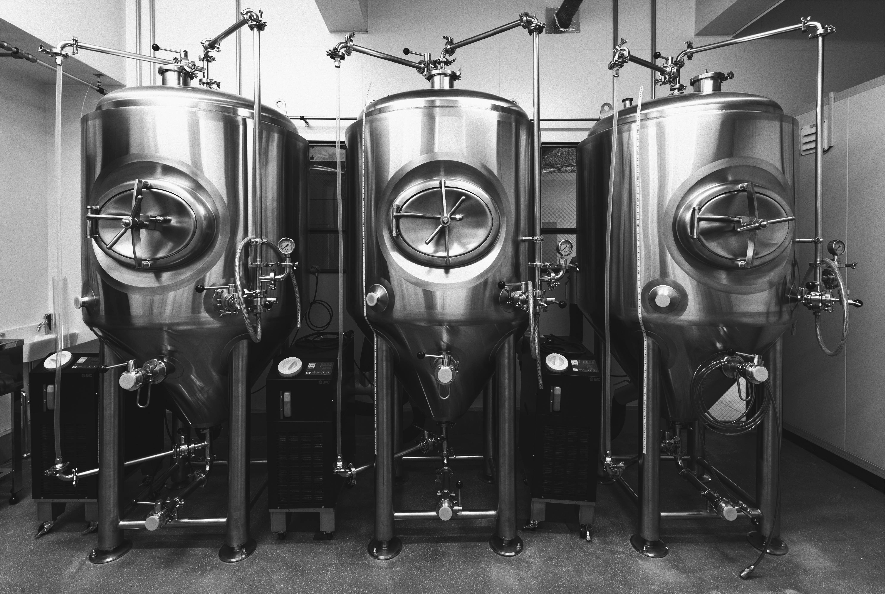</div>
          </div>
        </section>
        <section id="About">
          <div class="Section widthM">
            <div class="Contents Contents__00001">
              <div class="Header">
                <div class="JP spanAnim textAnim"> 
                  <div class="row">広島の素材にこだわり、</div>
                  <div class="row">ドリンカブルなビールを目指す</div>
                  <div class="row">HIROSHIMA NEIGHBORLY BREWING</div>
                </div>
                <div class="EN fadeIn">Crafting Drinkable Beers with Hiroshima's Local Ingredients</div>
                <h3 class="spanAnim titleAnim"> 
                  <div class="row">ビールは笑顔になる飲み物</div>
                </h3>
              </div>
              <div class="imgHolder">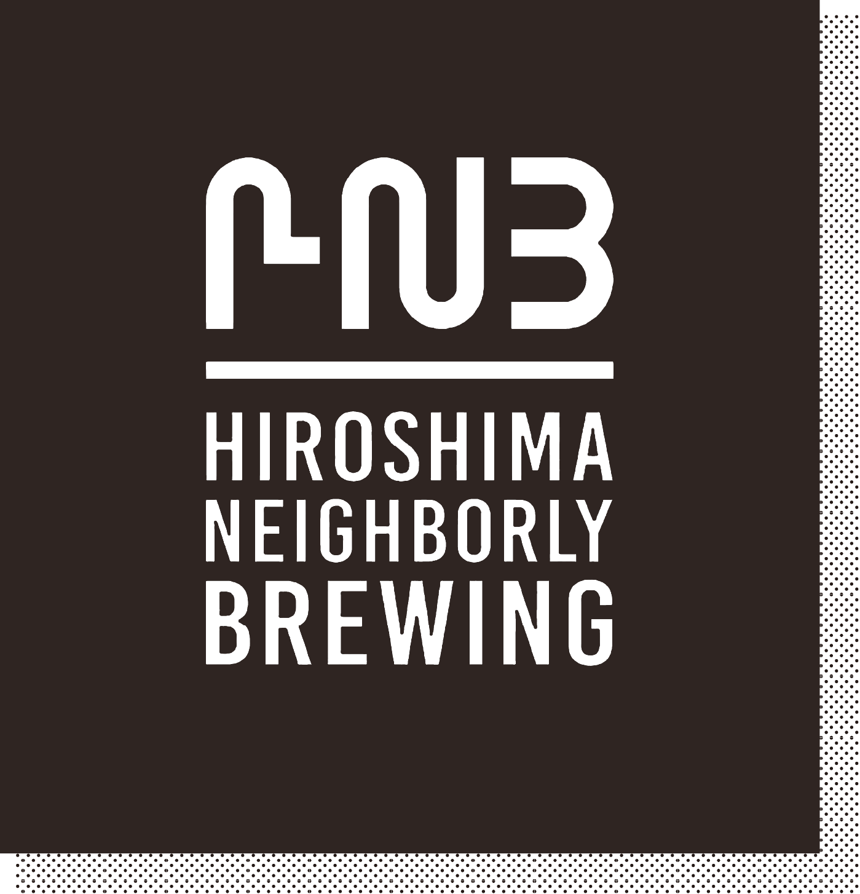</div>
            </div>
            <div class="Contents Contents__00002">
              <div class="imgHolder">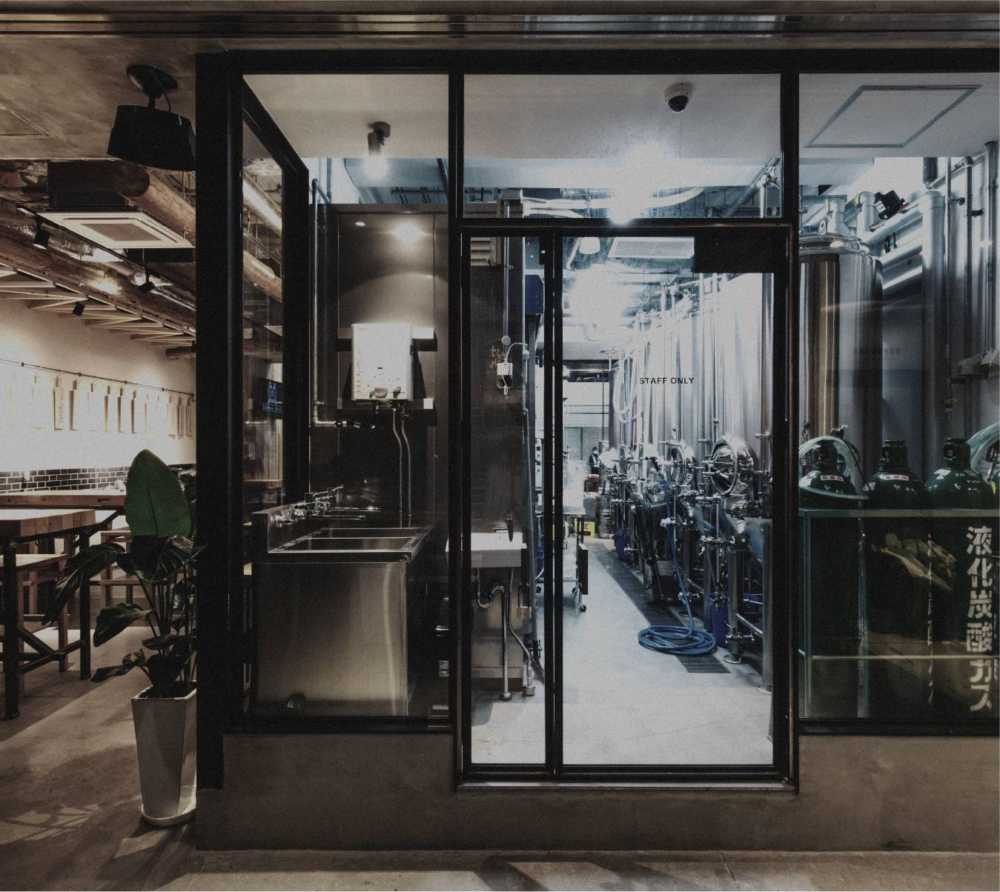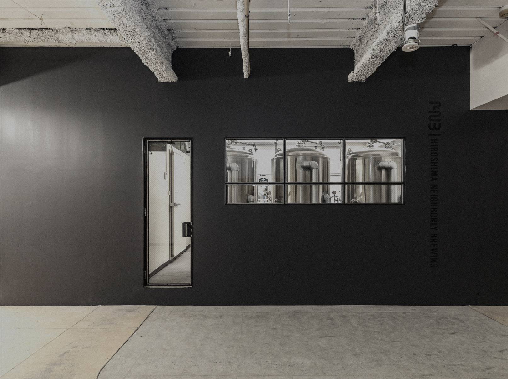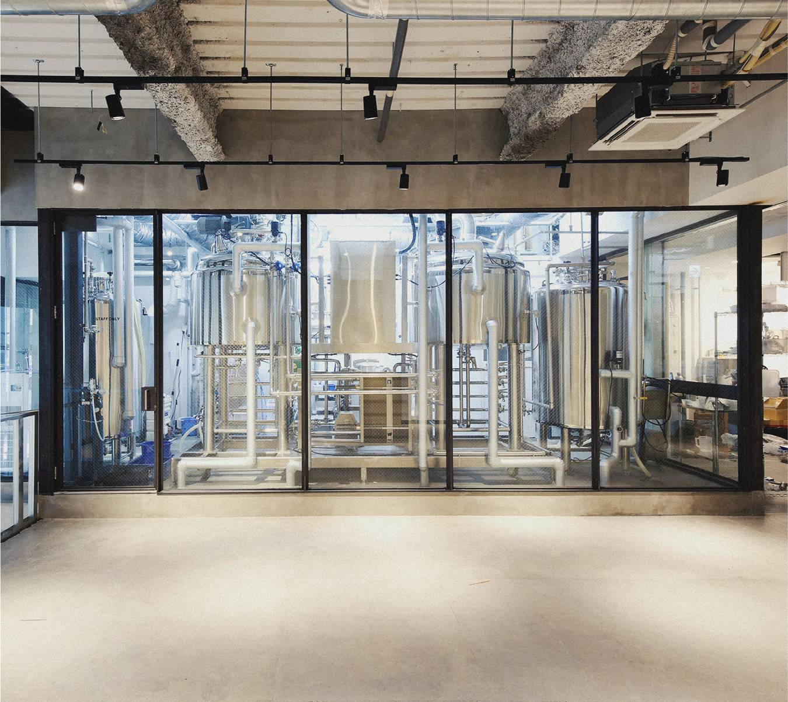</div>
            </div>
            <div class="Contents Contents__00003">
              <div class="Header">
                <div class="JP spanAnim textAnim"> 
                  <div class="row">地元を愛し、</div>
                  <div class="row">地域に寄り添う</div>
                  <div class="row">ビールづくり</div>
                </div>
                <div class="EN fadeIn">Loving the local area and brewing beer<br>that is close to the community</div>
              </div>
              <div class="Holder">
                <p class="JP fadeIn">HIROSHIMA NEIGHBORLY BREWING は、<br>広島の豊かな自然と文化を背景に、<br>地域とともに成長し続ける<br>クラフトビールメーカーです。 <br>私たちのビールは、地元の素材をできるだけ使い、<br>技術と情熱を注ぎ込んで作り上げています。</p>
                <p class="EN fadeIn">HIROSHIMA NEIGHBORLY BREWING<br>is a craft brewery that flourishes alongside Hiroshima's<br>abundant nature and vibrant culture.<br>Our beers are crafted with local ingredients,<br>infused with skill and passion,<br>to resonate deeply with our community.</p>
              </div>
              <div class="imgHolder">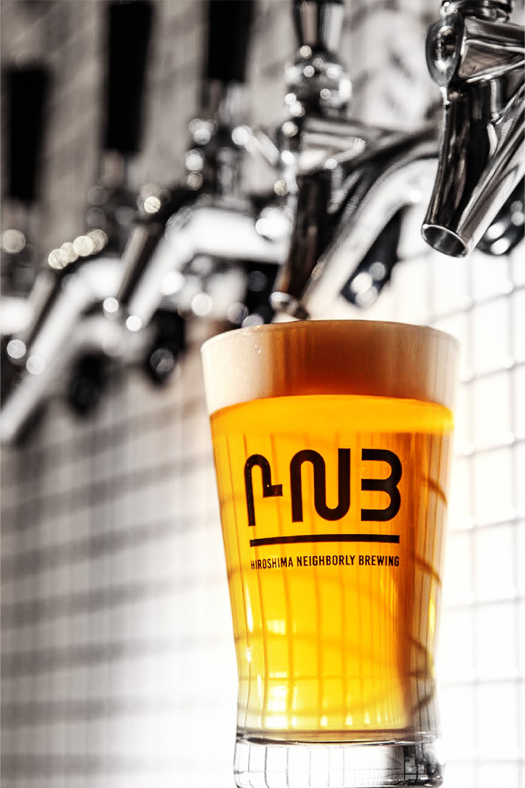</div>
            </div>
            <div class="Contents Contents__00004">
              <div class="Header">
                <div class="JP spanAnim textAnim">
                  <div class="row">商業・文化の中心地に</div>
                  <div class="row">位置するブルワリー</div>
                </div>
                <div class="EN fadeIn">Brewery in the Heart of<br>Hiroshima City's Culture and Commerce</div>
              </div>
              <div class="Holder">
                <p class="JP fadeIn">広島の象徴である広島平和公園の東側、<br>元安橋から本通りに入ってすぐの場所にある<br>広島市内で一番大きな設備を誇るブルワリーです。<br>さらに、醸造設備を眺めながら楽しめる併設の<br>ブリューパブ&居酒屋<br>「Craftbeer と炭火はればれ」もあり、<br>『まさにビール工場の中で飲める!楽しめる!』場所です。</p>
                <p class="EN fadeIn">Located on Hondori Street,<br>right beside Hiroshima Peace Park in Hiroshima, <br>HIROSHIMA NEIGHBORLY BREWING (HNB) is<br>home to the city's largest brewery.<br>Adjacent to it is 'Craftbeer and Sumibi Harebare,' <br>a lively brewpub and izakaya where you can<br>savor our beers with a view of the brewing facilitiesa<br>destination where the brewery experience comes to life!</p>
              </div>
              <div class="imgHolder">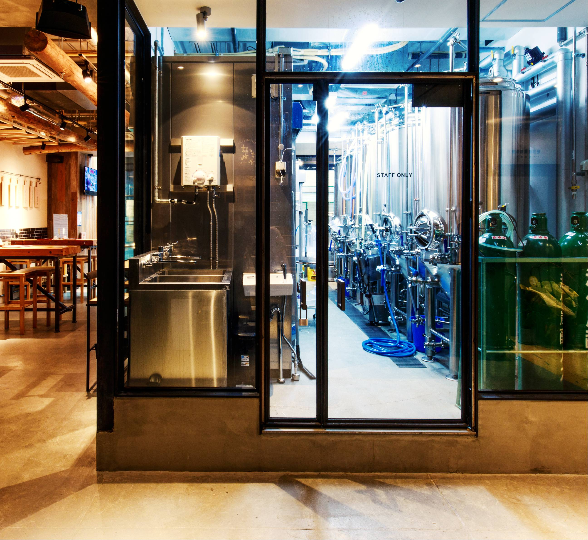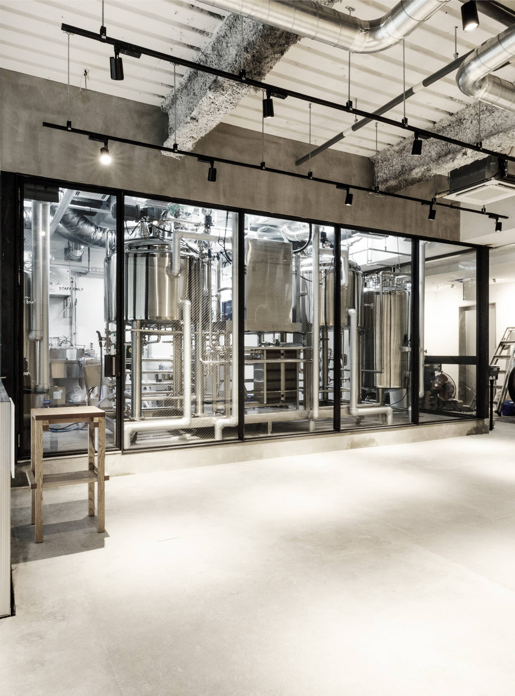</div>
            </div>
            <div class="Contents Contents__00005">
              <div class="Header">
                <div class="JP spanAnim textAnim"> 
                  <div class="row">地元素材へのこだわりと多彩なビール</div>
                </div>
                <div class="EN fadeIn">A focus on local ingredients and a wide variety of beers</div>
              </div>
              <div class="Holder">
                <p class="JP fadeIn">この地にあるからこそ、<br>「まちに根付いたものを作りたい」という思いで、 <br>できるだけ広島県産の素材を使い、<br>何度でも飲んでみたいと思っていただける<br>ビール造りを目指しています。<br>乾杯の一杯はもちろん、<br>美味しい料理とペアリングできる<br>ビールでお互いを引き立てる。<br><br>そんなクラフトビールを追求していきます。 <br>様々なスタイルのビールを、<br>それぞれに独自のストーリーや一口ごとに<br>新しい発見を感じていただけるように願い、<br>醸造に取り組んでいます。</p>
                <p class="EN fadeIn">Rooted in our community,<br>HIROSHIMA NEIGHBORLY BREWING proudly uses Hiroshima's local ingredients to craft a wide array of beer styles.<br>Each brew tells a unique story, inviting you to explore new discoveries with every sip.<br>Whether it's a celebratory first toast or a perfect pairing with a delicious meal,<br>our beers are designed to complement and elevate both.<br>We are committed to creating craft beers that enhance every experience, sip after sip.</p>
              </div>
              <div class="imgHolder">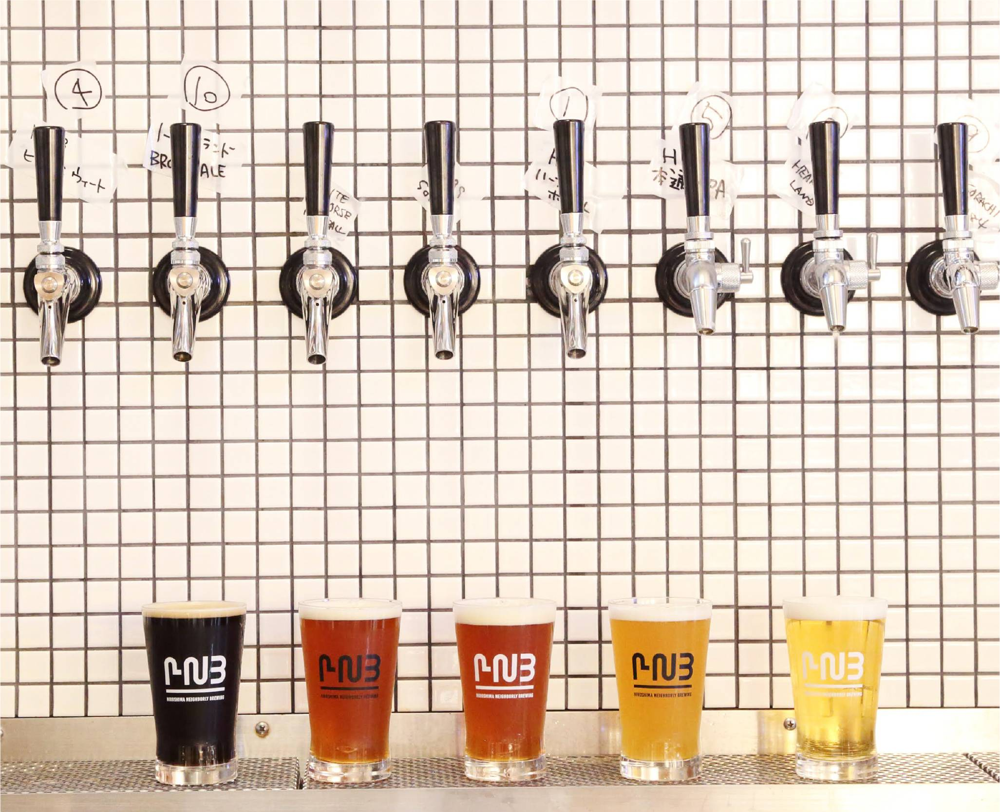</div>
            </div>
            <div class="Contents Contents__00006">
              <div class="imgHolder">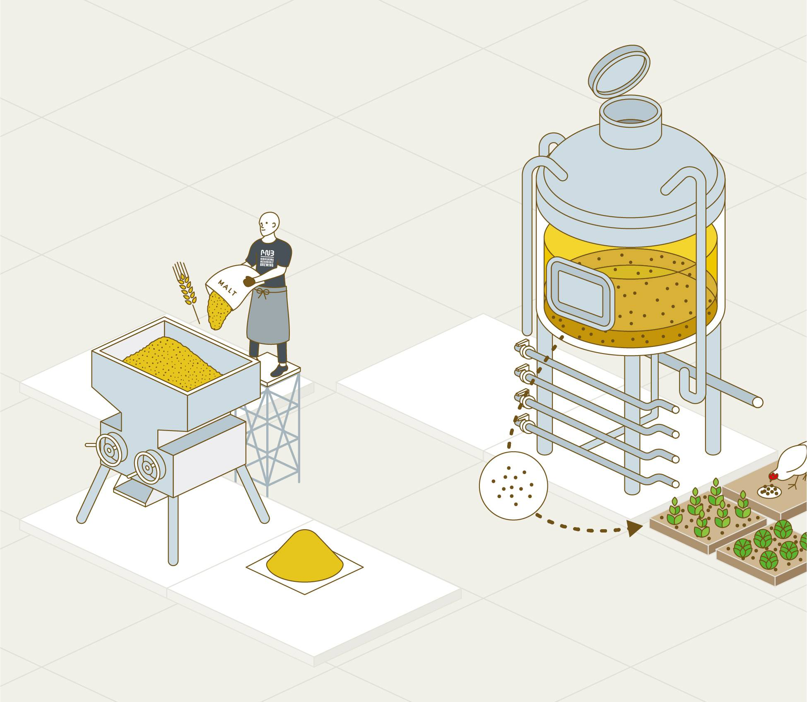</div>
              <div class="Header">
                <div class="JP spanAnim textAnim"> 
                  <div class="row">地域と共に歩む</div>
                  <div class="row">サステナビリティ</div>
                </div>
                <div class="EN fadeIn">Sustainability in Step<br>with the Local Community</div>
              </div>
              <div class="Holder">
                <p class="JP fadeIn">醸造過程で生じる麦芽粕は、<br>地元の農家さんや畜産農家さんに<br>肥料や飼料として再利用していただいています。<br>また、企業や農家さんと協力し、<br>アップサイクル製品の開発も目指しています。</p>
                <p class="EN fadeIn">Malt residues generated during brewing<br>are recycled by local farmers and livestock<br>breeders as fertilizers and animal feed.<br>We also aim to develop upcycled products<br>through collaborations with businesses<br>and farmers.</p>
              </div>
            </div>
            <div class="Contents Contents__00007">
              <div class="imgHolder">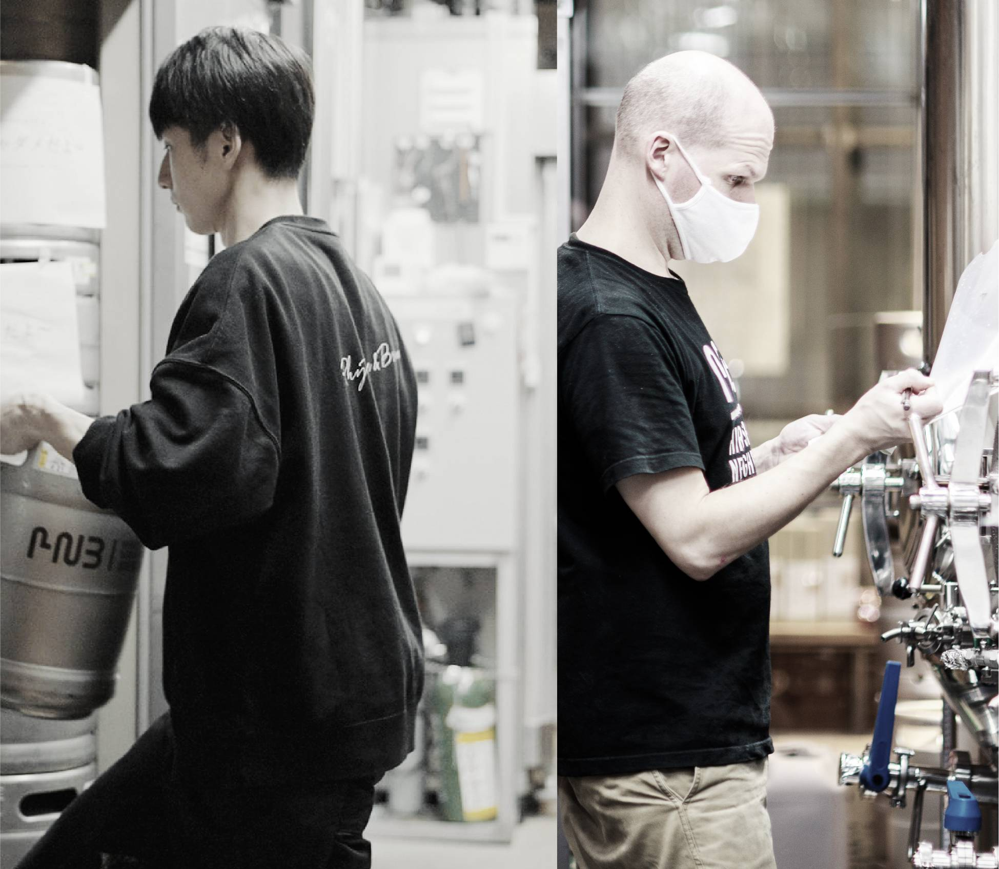</div>
              <div class="Header">
                <div class="JP spanAnim textAnim"> 
                  <div class="row">美味しさと一緒に</div>
                  <div class="row">安全もお届け</div>
                </div>
                <div class="EN fadeIn">Along with deliciousness<br>Delivering safety too</div>
              </div>
              <div class="Holder">
                <p class="JP fadeIn">私たちのビールは、<br>いつもそばにある存在でありたい。<br>ビールを手に取るたびに、<br>自然と笑顔がこぼれるような、<br>心温まるひとときをお届けしたい。<br>そんな思いを込めて、設備の洗浄から仕込み、<br>発酵・熟成、パッケージングの細部に至るまで、<br>私たちは丁寧に真摯に醸造しています。</p>
                <p class="EN fadeIn">Our aim is for our beers to be a constant companion, <br>creating heartwarming moments<br>that naturally bring a smile to your face with every sip.<br>From meticulous equipment<br>cleaning to brewing, fermentation,aging,<br>and packaging, we approach each stage<br>with care and sincerity.</p>
              </div>
            </div>
          </div>
        </section>
        <section id="Beer">
          <div class="Section"> 
            <div class="Header spanAnim titleAnim">
              <h2 class="row">ORIGINAL BEER COLLABORATIONS</h2>
            </div>
            <div class="Contents widthM">
              <div class="point">Requests for Original Beer and Collaborations</div>
              <div class="Holder"> 
                <h3 class="fadeIn">オリジナルビールや<br>コラボレーション</h3>
                <div class="textArea">
                  <p class="JP fadeIn">オリジナルビールやコラボレーションのご要望、<br>OEMビールの開発のご相談なども承っております。<br>お気軽にお問い合わせください。</p>
                  <p class="EN fadeIn">We are happy to discuss requests for original beers, <br>collaborations,and OEM beer development.<br>Please feel free to contact us.</p>
                </div>
              </div>
              <div class="imgHolder">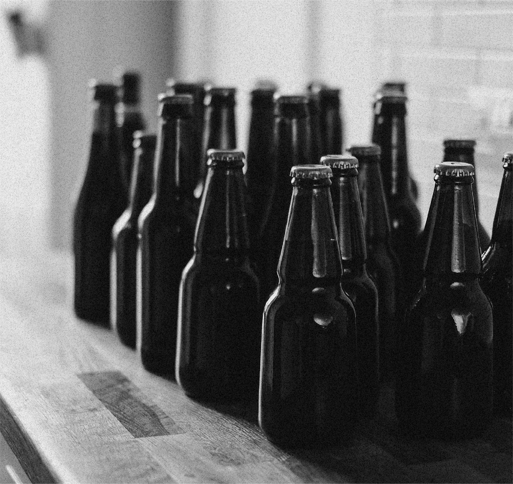</div><a class="contactBtn targetBlank" href="https://hiroshima.beer/pages/contact"> </a>
            </div>
          </div>
        </section>
        <section id="Brand">
          <div class="Section widthM">
            <div class="Header"> 
              <div class="Logo"> </div>
              <div class="textArea"> 
                <h2>
                  <div class="EN">HIROSHIMA NEIGHBORLY BREWING</div>
                  <div class="JP">（クラフトビール醸造所）</div>
                </h2>
                <div class="LinkHolder"> <a class="online targetBlank" href="https://hiroshima.beer/">
                    <div class="icon"> </div><span>online shop</span></a><a class="BtoB targetBlank" href="https://hiroshima.beer/pages/contact"><span>業務店様・飲食店様は<br>こちら <span class="arrow">▶︎▶︎▶︎</span></span></a></div>
                <div class="snsHolder"> 
                  <div class="Block Block__00001"> 
                    <p>お店の情報など<br>随時配信中！</p>
                    <ul> 
                      <li class="ig"><a class="targetBlank" href="https://www.instagram.com/hnb_beer/"></a></li>
                      <li class="x"><a class="targetBlank" href="https://twitter.com/hnb_beer"></a></li>
                      <li class="fb"><a class="targetBlank" href="https://www.facebook.com/hiroshimaNB/"></a></li>
                      <li class="note"><a class="targetBlank" href="https://note.com/hiroshima_hnb/"></a></li>
                    </ul>
                  </div>
                  <div class="Block Block__00002">
                    <p>業者様向けにHNBビール情報を<br>お届けしています！</p>
                    <ul> 
                      <li class="line"><a class="targetBlank" href="https://lin.ee/vP9AjZx"></a></li>
                    </ul>
                  </div>
                </div>
              </div>
            </div>
            <div class="Contents"> 
              <p>瀬戸内に日が昇る、朝焼けの色をイメージしたアンバーラガー「広島日の出ラガー」をはじめ、尾道市瀬戸田にある 柑橘農園citrusfarmsたてみち屋さんの Non-chemical なレモンを使用した「HIROSHIMAレモンスカッとセッションIPA」など定番5 種類を基本に、毎月 1~2 種類、限定商 品を醸造し、併設のブリューパブ&居酒屋「Craftbeerと炭火はればれ」では、随時約10種類の樽生ビールを楽しんでいただけます。</p>
              <div class="imgHolder">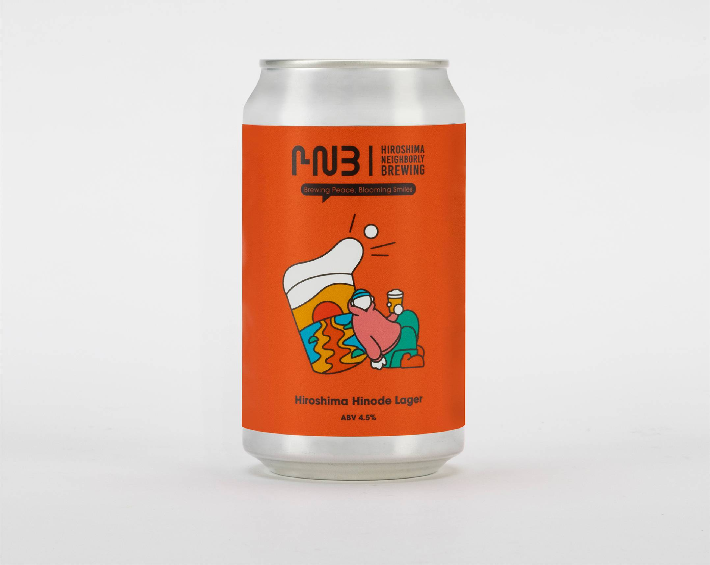</div>
              <div class="swiper brandSlider">
                <div class="swiper-wrapper">
                  <div class="swiper-slide" style="background-image: url('../assets/img/brewery/brandImg00001.jpg')"></div>
                  <div class="swiper-slide" style="background-image: url('../assets/img/brewery/brandImg00002.jpg')"></div>
                  <div class="swiper-slide" style="background-image: url('../assets/img/brewery/brandImg00003.jpg')"></div>
                  <div class="swiper-slide" style="background-image: url('../assets/img/brewery/brandImg00004.jpg')"></div>
                </div>
                <div class="swiper-controller">
                  <div class="swiper-button-prev"></div>
                  <div class="swiper-button-next"></div>
                </div>
              </div>
              <div id="LinkHolder"> <a class="online targetBlank" href="https://hiroshima.beer/">
                  <div class="icon"> </div><span>online shop</span></a><a class="BtoB targetBlank" href="https://hiroshima.beer/pages/contact"><span>業務店様はこちら</span></a></div>
            </div>
          </div>
        </section>
        <section id="Brewer">
          <div class="Section widthM">
            <div class="point">Introducing the brewer</div>
            <div class="note">実はあんこ系のお菓子が大好きな甘党でもある<span>・・・</span>。</div>
            <div class="Header spanAnim titleAnim">
              <h2 class="row">OUR BREWER.</h2>
              <div class="Name"> 
                <div class="JP">ワーソップ カール</div>
                <div class="EN">Warsop Karl</div>
              </div>
            </div>
            <div class="Contents"> 
              <p>ノースカロライナ州出身。大学で広島に留学。広島が大好きに。<br>英語の教師をしながら、アメリカや日本のビールを中心に飲みまくり、みんなで楽しく飲む雰囲気の日本の酒飲み文化も好きになる。<br>その後、和歌山県ナギサビールで約２年半勤務し、ビール造りを学ぶ。<br>広島のクラフトビール専門店であるGOLDEN GARDENやRAKUBEER勤務を経て、HNBでは、ヘッドブルワーとして、真摯にビール造りに取り組んでいる。<br><br>今以上に技術や知識をつけ、美味しいビールを造るために、<br>HNBのOPEN前には、世界一のヴァイツェンを造る大山Gビール（鳥取）や圧倒的なクリエイティブ力でビールを造るうしとらブルワリー（栃木）で、先方のご厚意により、ブルワリー（実地）研修を受けるなど意欲的に行動。</p>
            </div>
            <div class="imgHolder">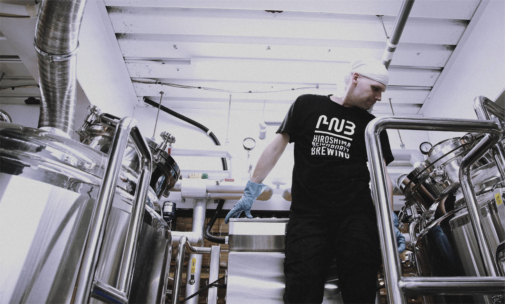</div>
            <div id="LinkHolder"> <a class="recruit targetBlank" href="https://en-gage.net/kanaderu/"><span>staff recruit</span></a></div>
          </div>
        </section>
        <section id="Link"> 
          <div class="Section widthM">
            <div class="Contents"> <a class="Block ourbeer slideUp" href="../ourbeer/">
                <h3>our beer </h3>
                <p>Loving the local area and a wide variety of beers.</p>
                <div class="arrow"></div></a><a class="Block restaurant slideUp" href="../restaurant/">
                <h3>restaurant</h3>
                <p>Craftbeer and sumibi harebare.</p>
                <div class="arrow"></div></a><a class="Block brewery slideUp" href="../brewery/">
                <h3>BREWERY</h3>
                <p>Hiroshima Neighborly Brewing.</p>
                <div class="arrow"></div></a><a class="backBtn" href="../aboutus/">GO BACK “ABOUT US”</a>
              <div id="LinkHolder"> <a class="online targetBlank" href="https://hiroshima.beer/">
                  <div class="icon"> </div><span>online shop</span></a><a class="BtoB targetBlank" href="https://hiroshima.beer/pages/contact"><span>業務店様はこちら</span></a></div>
              <div class="snsHolder"> 
                <p>お店の情報など随時配信中!</p>
                <ul> 
                  <li class="ig"><a class="targetBlank" href="https://www.instagram.com/hnb_beer/"></a></li>
                  <li class="x"><a class="targetBlank" href="https://twitter.com/hnb_beer"></a></li>
                  <li class="fb"><a class="targetBlank" href="https://www.facebook.com/hiroshimaNB/"></a></li>
                  <li class="note"><a class="targetBlank" href="https://note.com/hiroshima_hnb/"></a></li>
                </ul>
              </div>
            </div>
          </div>
        </section>
        <footer class="scrollify" id="Footer">
          <div class="Section">
            <div class="Contents">
              <div class="ConpanyMenu"> <a class="Logo" href="..//"></a>
                <div class="LinkHolder"> 
                  <ul> 
                    <li class="ig"><a class="targetBlank" href="https://www.instagram.com/hnb_beer/"></a></li>
                    <li class="x"><a class="targetBlank" href="https://twitter.com/hnb_beer"></a></li>
                    <li class="fb"><a class="targetBlank" href="https://www.facebook.com/hiroshimaNB/"></a></li>
                    <li class="note"><a class="targetBlank" href="https://note.com/hiroshima_hnb/"></a></li>
                  </ul>
                </div><a class="BtoB targetBlank" href="https://hiroshima.beer/pages/contact"><span>B to B </span><span>業務店様はこちら</span></a>
                <div class="cw pc">©2024. Brewing Peace, Blooming Smiles.</div>
              </div>
              <div class="MainMenu">
                <h2 class="Header spanAnim"><span class="row">Brewing Peace, Blooming Smiles.</span></h2>
                <ul>
                  <li><a href="../aboutus/">about us</a></li>
                  <li><a href="../ourbeer/">our beer</a></li>
                  <li><a href="../brewery/">BREWERY</a></li>
                  <li><a href="../restaurant/">restaurant</a></li>
                  <li><a class="targetBlank" href="https://hiroshima.beer/collections/goods">ORIGINAL GOODS</a></li>
                  <li><a href="../?News/">NEWS</a></li>
                  <li><a href="../?ShopAccess/">shop&access</a></li>
                  <li><a class="targetBlank" href="https://en-gage.net/kanaderu/">recruit</a></li>
                  <li><a class="targetBlank" href="https://hiroshima.beer/pages/contact">CONTACT</a></li>
                </ul>
              </div><a class="online targetBlank" href="https://hiroshima.beer/">
                <div class="icon"> </div><span>online shop</span></a><a class="BtoB targetBlank" href="https://hiroshima.beer/pages/contact"><span>B to B </span><span>業務店様はこちら</span><span class="arrow"> </span></a>
              <div class="cw sp">©2024. Brewing Peace, Blooming Smiles.</div>
            </div>
            <div class="Foot"> 
              <p><span>株式会社カナデル</span>　 広島市中区大手町1丁目5－10</p>
            </div>
          </div>
        </footer>
      </main>
    </div>
    <script type="text/javascript" src="../assets/js/scrollreveal.min.js"></script>
    <script type="text/javascript" src="../assets/js/swiper.min.js"></script>
    <script type="text/javascript" src="../assets/js/luxy.min.js"></script>
    <script type="text/javascript" src="../assets/js/app.min.js"></script>
  </body>
</html>